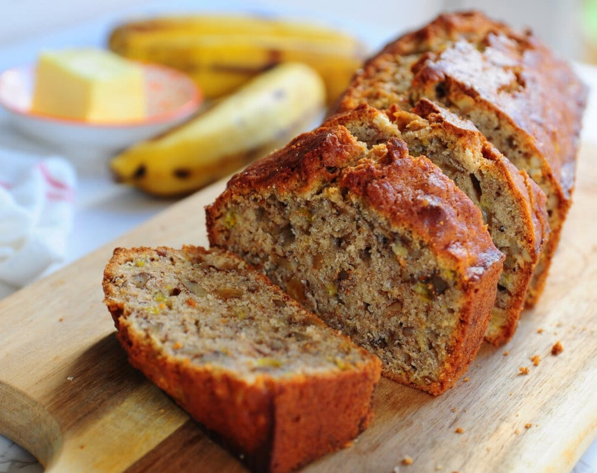

Banana Bread

Description
This is the best banana bread recipe I have found. It is the most successful and versatile quick bread! You can also customize and use chunky applesauce or a 15-ounce can of pumpkin for wonderful variations.
Ingredients
- 1 cup white sugar
- ½ cup margarine, softened
- 2 eggs
- 1 ½ cups mashed banana
- 2 cups all-purpose flour
- 1 teaspoon baking soda
Steps
- Preheat the oven to 350 degrees F (175 degrees C). Grease and flour a 9x5-inch loaf pan.
- Beat sugar and margarine in a bowl until smooth. Beat in eggs, then bananas. Add flour and baking soda, stirring just until combined. Pour into the prepared pan.
- Bake in the preheated oven until a toothpick in the center comes out clean, about 1 hour. Remove from the pan and let cool.
- Store in the refrigerator or freeze.